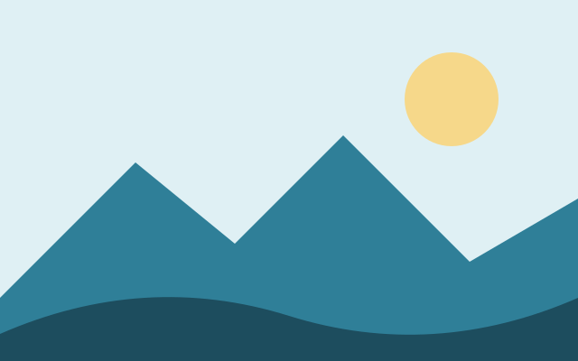
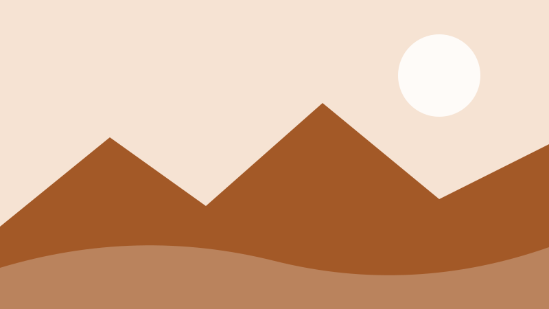
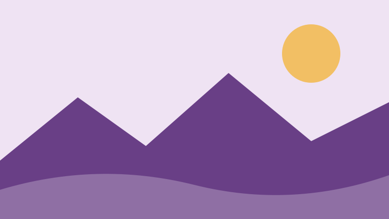

Explore majors
Search more than thirty programs by college or type.
Browse majors and certificatesSearch more than thirty programs by college or type.
Browse majors and certificatesRequest a tour, find the campus map and see open houses.
Visit Cedar Lake StateSee our promise programs, tuition links and aid steps.
Admissions and aidLearn the steps, then try the demonstration start form.
How to applyStudents here join research teams as first-years, learn in small seminars inside a large university, and graduate with a network that spans the state.


Undergraduates built low-cost buoys that report water temperature each hour.
Read the summary
New seating, step-free entrances and a larger training room are ready for winter.
Read the summary
A revised income threshold lets more families apply.
Read the summaryFrom soil microbes to quantum sensors, teams across campus turn questions into answers that reach farms, clinics and classrooms.
Extension programs, clinics and free community lectures carry the campus into every county. Our mission is to teach, discover and serve.
Ask the next question, then go find the answer.
Look out for the person next to you in the lab and on the lake path.
Put what you learn to work for your community.
Meet students and alumni who started with one idea and a lot of persistence.
See student lifeTrails, farmers markets, live music and a lakefront that turns into a skating path in winter are all within a short walk of campus.
Plan a visit